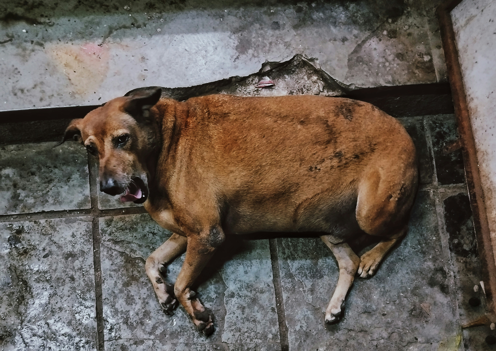

Animais Fantásticos
-

-

Cães
Os cães, descendentes dos lobos, foram os primeiros animais domesticados pelo ser humano, há milhares de anos. Inicialmente, eles se aproximaram das comunidades humanas em busca de alimento, e essa interação evoluiu para uma relação de parceria. Ao longo do tempo, os cães desempenharam papéis essenciais, como ajudar na caça, proteger contra predadores e oferecer companhia. Hoje, eles são considerados membros da família em muitas culturas, simbolizando lealdade e afeto.
Infelizmente, essa relação nem sempre é respeitada. Em 2023, cerca de 184.960 animais, incluindo cães, foram abandonados ou resgatados por maus-tratos no Brasil, sendo 96% cães—aproximadamente 177.562 cães. Para 2024, a estimativa é que o número total de animais resgatados ultrapasse 185 mil, com os cães ainda representando a maioria. Esses dados refletem a urgência de combater a crueldade contra animais e promover a conscientização sobre seus direitos.
Gatos
Os gatos têm uma história fascinante que remonta a cerca de 10.000 anos atrás, quando começaram a ser domesticados no Oriente Médio. Inicialmente, eles eram valorizados por sua habilidade natural de caçar roedores, protegendo os estoques de grãos das primeiras comunidades agrícolas. No Egito Antigo, os gatos eram considerados sagrados e associados à deusa Bastet, símbolo de fertilidade e amor materno. Com o tempo, eles se espalharam pelo mundo, sendo levados por marinheiros para controlar pragas em embarcações. Apesar de períodos de perseguição, como na Idade Média, os gatos voltaram a ser apreciados como animais de estimação, conhecidos por sua independência e afeto.
Infelizmente, muitos gatos ainda sofrem maus-tratos. Em 2023, o Brasil registrou cerca de 184.960 animais abandonados ou resgatados por maus-tratos, incluindo cães e gatos. Para 2024, a estimativa é que esse número ultrapasse 185 mil casos. Embora os dados específicos para gatos sejam limitados, eles representam uma parcela significativa desses números, destacando a necessidade de conscientização e ações para proteger esses animais.